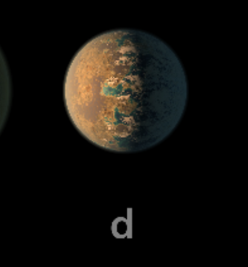

TRAPPIST-1 d

TRAPPIST-1 d es el tercer planeta del sistema. Es uno de los mundos más pequeños del conjunto.
Características
- Tipo: planeta rocoso.
- Periodo orbital: aproximadamente 4.05 días terrestres.
- Es más pequeño que la Tierra.
- Recibe menos energía que los dos planetas interiores.
Dato interesante
Su tamaño y su posición hacen que sea importante para comparar cómo cambian las condiciones entre los planetas del sistema.
¿Podría tener vida?
Su ubicación no permite asegurar que tenga temperaturas adecuadas. La presencia de una atmósfera y sus características todavía son importantes para conocer su habitabilidad.
Planeta anterior Todos los planetas Siguiente planeta